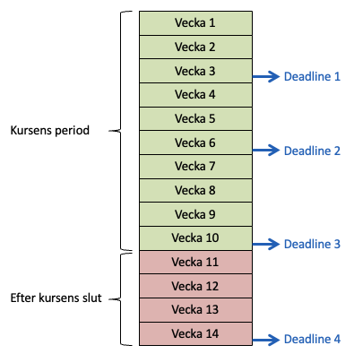
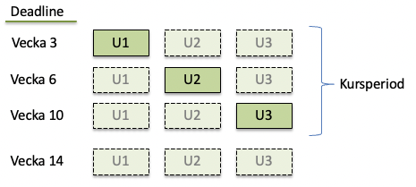

Kursens examination består av tre inlämningsuppgifter, U1 till U3. Dessa ligger förlagda i varsin period på tre till fyra veckor, vilket du kan se både på sidan om kursen och i veckoplanen.
U1
- Enkel webbplats med tre sidor.
- Grunderna i HTML och CSS.
- Svar på frågor kopplat till föreläsningar.
U2
- Webbplats med responsiv design.
- CSS för layout och visuella effekter.
- Svar på frågor kopplat till föreläsningar.
U3
- Webbplats för påhittat företag eller annan organisation.
- Användning av metod för design av en webbplats.
- Fördjupning i HTML och CSS..
På sidorna för U1 och U2 kan du se att det finns förslag på en uppdelning i deluppgifter för varje uppgift, så du gör förslagsvis en deluppgift per vecka, efter det att du gått igenom veckans föreläsningar och laborationer. Deluppgifterna ska dock inte redovisas var för sig, utan du redovisar hela uppgiften vid en deadline i kursen.
Uppgift U1 och U2 går ut på att visa att du tagit till dig det som tagits upp i föreläsningar och laborationer och att du kan skapa några webbsidor utifrån det. Dessa uppgifter redovisas genom att du enligt anvisningar publicerar de webbsidor du skapat och skickar in url:en till dina sidor. Betygsskalan på dessa uppgifter är U (underkänd) eller G (godkänd).
I uppgift U3 ska du skapa en egen webbplats utifrån den metod och teknik som tas upp i kursen och utifrån ett antal kriterier som ges på uppgiftens webbsida. Utöver att du ska publicera webbplatsen, ska du också skriva en liten rapport över ditt arbete. Detta blir den slutliga examinationen och betygsskalan är U (underkänd), G (godkänd) eller VG (väl godkänd). Betyget på den uppgiften blir också kursens slutbetyg.
Allmänna krav för samtliga uppgifter
Följande krav gäller samtliga uppgifter:
- Kod
- Webbsidorna ska vara strukturerade i HTML Living Standard (HTML5). HTML-dokumenten får inte innehålla något annat än HTML-kod och sidornas innehåll. Ingen CSS-kod får finnas i HTML-dokumenten.
- Stilsättningen ska göras i CSS och all CSS-kod ska ligga i en separat fil som länkas in till alla HTML-dokument på den webbplats som skapas i uppgiften.
- Både HTML- och CSS-koden ska vara validerad i de validatorer som tas upp i laboration 2 och 3 och gå igenom dem utan några fel. En del varningar, kan vara OK, men bör helst undvikas.
- Undantag i U3 är då media från en extern webbtjänst inkluderas och den kod man då får ger ett valideringsfel. Då är det OK att bortse från det felet.
- Andra språk som JavaScript, PHP, etc. är inte tillåtet i lösningarna.
- Undantag i U3 är då media från en extern webbtjänst (t.ex. en karta eller annan extern media) inkluderas och den kod man då får innehåller kod i något annat språk.
- Mallar, bibliotek eller ramverk såsom Bootstrap eller liknande får ej användas.
- Kodens stil
- Använd indrag (indentering) av kodrader, för att tydliggöra strukturen. Dvs HTML-element som ligger inuti ett annat HTML-element skjuts in med tab eller blanksteg.
- Se hur det görs i exempel i föreläsningar och laborationer.
- Använd också formateringskommandot i Visual Studio Code, så som det beskrivs i lab L2a.
- Använd indrag (indentering) av kodrader, för att tydliggöra strukturen. Dvs HTML-element som ligger inuti ett annat HTML-element skjuts in med tab eller blanksteg.
- Egna lösningar
- Alla uppgifter är individuella, vilket innebär att de ska lösas och redovisas självständigt. Du får gärna diskutera uppgifternas krav, arbetssätt, etc. med dina kurskamrater, men lösningar och svar ska du ta fram på egen hand.
- All kod ska vara kod som skrivs på egen hand, dvs ej genererad av något program, kopierad från någon annan källa, skriven av en kompis, etc. Du får heller inte använda mallar eller bibliotek från program eller annan resurs. Du får dock utgå från exempel i kursen och modifiera kod som finns i dem. En editor som hjälper till med stavning och förslag (så som Visual Studio Code) är tillåten.
- Webbläsare och publicering
- Vi använder Firefox, då vi kontrollerar dina redovisningar, så du måste själv också ha testat att allting fungerar där.
- URL:en till de sidor du skapar i uppgifterna får inte lämnas ut till någon annan än kursens lärare. Ändra heller inte den URL som du får från Netlify till något som är lätt att gissa, utan behåll URL:en med den slumpmässiga texten som du får från Netlify.
Mer specifika krav anges på sidorna för de olika uppgifterna.
Fusk
Naturligtvis får inte fusk förekomma, utan det är viktigt att du genomför och redovisar uppgifterna enligt de krav vi har. Fusk kan huvudsakligen vara på två former:
- Plagiat: kopiering av annans lösning från kurskamrater, webben, etc.
- Otillåtet samarbete: ta fram gemensam lösning eller låta någon annan göra uppgiften.
Du får heller inte göra din lösning av uppgifterna tillgänglig för andra. Du får alltså inte visa upp din kod och dina svar eller publicera det öppet på webben. Publicering får endast göras så som det beskrivs i kursen med "hemlig" url, som du endast får lämna till kursens lärare genom redovisning enligt instruktioner i uppgifterna. Detta gäller även efter det att du blivit godkänd och avslutat kursen.
Det är tillåtet att:
- utgå från exempel i kursen eller hämta inspiration från andra källor (ta då med en tydlig referens).
- samarbeta i inläsning och genomförande av laborationer samt diskutera kursinnehåll, exempel, etc.
Vid misstanke om fusk säger universitetets regler att det ska rapporteras till Rektor/disciplinnämnd. Påföljden kan ge avstängning från universitetet i upp till sex månader.
Är du osäker, kan du diskutera det med kursens lärare.
Redovisning av uppgifter
Det finns tre inlämingsuppgifter och samtliga redovisas genom att du publicerar dem på webben (i Netlify, så som det visas i lab L1). Därefter skickar du in en länk till din webbplats i MyMoodle. Redovisning sker vid schemalagda deadlines – se nedan.
Läs noggrannt instruktioner om genomförande och redovisning i respektive uppgift. Där anges vad som ska göras och hur det ska redovisas. Alla krav i uppgifterna måste vara uppfyllda i redovisningen. Om något krav är oklart eller om du undrar över något kring uppgiften, så frågar du läraren i god tid. Utelämnar du något krav som du inte förstått, riskerar du annars att bli underkänd.
Deadlines
Det finns tre deadlines i kursens period och en deadline ett antal veckor efter kursens slutdatum.
Veckonumren i nedanstående figur är ordningsnummer för kursens veckor och inte veckonummer i kalendern.
Vid samtliga deadlines kan du redovisa vilka uppgifter du vill - en eller flera uppgifter. Men följer du kursens veckoplan redovisar du uppgift U1 vid deadline 1, uppgift U2 vid deadline 2 och uppgift U3 vid deadline 3. Deadline 4 används för redovisning av uppgifter som du missat att redovisa under kursens gång eller uppgifter som blivit underkända, så den används som reserv. Du bör ha detta som plan, eftersom du efter kursen troligen läser en annan kurs och behöver ju då ägna tid åt den.
Blir du underkänd på en uppgift kan du sedan redovisa den igen, tillsammans med följande uppgift vid nästa deadline. Du kan alltså redovisa valfritt antal uppgifter vid varje deadline och skulle du bli underkänd flera gånger, kan du redovisa uppgifterna flera gånger. Vi behandlar dock inte halvfärdiga redovisningar, utan då blir resultatet endast underkänt utan ytterligare kommentarer. Så skicka inte in samtliga uppgifter varje gång, utan endast de du blivit klar med.
Vi har som mål att granska och skicka svar på redovisningar inom en vecka efter en deadline, men redovisar du flera uppgifter samtidigt, prioriterar vi den uppgift som ligger i fas med kursens veckoplan och svar på övriga uppgifter kan dröja något längre.
Datum och tid för deadline
Deadlines är satta till söndag klockan 23:59 i de veckor deadlines ligger. Men egentligen bör du kunna bli klar med uppgifterna under fredagen och bör ha det som mål. Varje vecka bör du alltså sträva efter att bli klar med veckans arbete under fredagen, oavsett om det är en deluppgift eller hela uppgiften.

Vi har förlängt deadline två dagar till söndagen. Utöver det kan ingen ytterligare förlängning ges, oavsett orsak, utan denna förlängning gäller redan från början för samtliga studenter. Blir du inte klar till en deadline, kan du ju istället redovisa vid nästa deadline.
Inför en deadline är redovisning av samtliga uppgifter öppna i kursens lärplattform (MyMoodle). Vid deadline stängs uppgifterna och du kan inte längre skicka in någon redovisning. Då vi sedan granskat de redovisningar som kommit in, öppnar vi uppgifterna igen och flyttar fram deras datum till nästa deadline.
Kursperiod
Kursen pågår under tio veckor, så den fjärde deadline ligger efter kursens slut. Det är endast under kursperioden som det ges undervisning och handledning. Deadline 4 är alltså ingen förlängning av kursen, utan endast ett extra tillfälle för redovisning efter kursens slut.
Restuppgifter
Om du har någon uppgift kvar som är underkänd eller som du inte redovisat även efter kursens slut, kallar vi det för en restuppgift.
I slutet av varje läsår har vi en uppsamling av läsårets samtliga kurser. Detta ligger under sommaren och deadline för uppsamling av restuppgifter i denna kurs är alltid den 15 augusti (oavsett vad det är för veckodag). Du kan då redovisa samtliga uppgifter som du har kvar i kursen.
Det går också redovisa uppgifter nästa gång kursen ges. Du genomför då de uppgifter som är aktuella vid det kurstillfället.
Granskning av redovisningar och svar
Flera krav i uppgifterna är utformade som kvantitativa krav, men det sker alltid även en kvalitativ bedömning av det du skapat i uppgiften. För att bli godkänd på en uppgift måste samtliga krav vara uppfyllda och samtliga frågor (i U1 och U2) vara korrekt besvarade.
Granskning av redovisningarna påbörjas dagen efter deadline. Det går inte få en granskning tidigare eller få något förhandsbesked innan deadline.
Svar på redovisning
Svar skickas som en kommentar på din redovisning i MyMoodle. Om du inte ändrat dina inställningar där, bör det då också automatiskt skickas ett meddelande till din studentmail, men du måste gå in i MyMoodle för att se hela svaret.
Vi prioriterar att gå igenom redovisningarna och skicka ut svar snabbt, så svaren är ganska kortfattade. Om allting i redovisningen är OK, blir svaret endast att uppgiften är godkänd. Om redovisningen inte uppfyller kraven, blir svaret att uppgiften är underkänd samt en motivering till det.
Det ges ingen möjlighet att komplettera en redovisning mellan deadlines. Saknas något eller om något är fel i redovisningen, blir resultatet underkänt, och du får redovisa uppgiften igen vid nästa deadline. Vi använder alltså "omredovisning" istället för "komplettering". Du kan redovisa samma uppgift flera gånger (ifall det skulle behövas) vid de deadlines som finns i kursen.
Betyg och rapportering i Ladok
Kursens resultat rapporteras i Ladok, det register som universitetet använder för studieresultat. Där registreras betyg på respektive uppgift samt slutbetyg på kursen. För att bli godkänd på kursen, måste samtliga uppgifter vara godkända.
Betyg
För U1 och U2 är betygen U (underkänd) eller G (godkänd). För U3 är betyget U (underkänd), G (godkänd) eller VG (väl godkänd).
Kursens slutbetyg blir detsamma som betyget på U3.
Rapportering i Ladok
U1 och U2 registreras med 2hp vardera och U3 med 3,5hp. Registreringen sker normalt en vecka efter det att svar skickats ut.